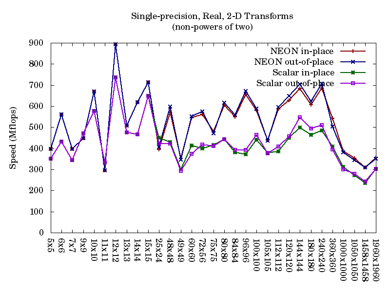
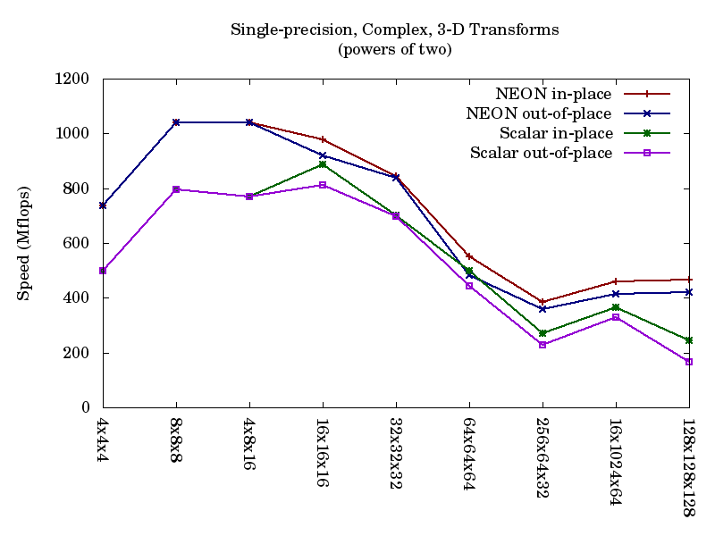
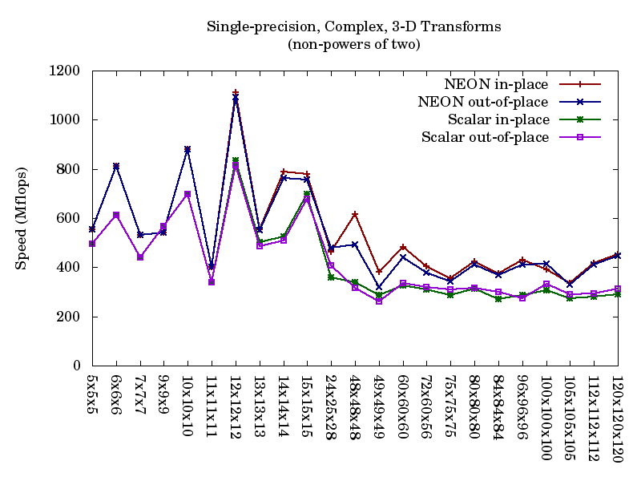
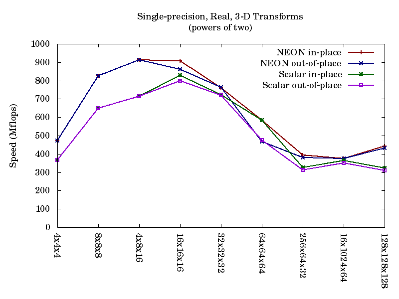
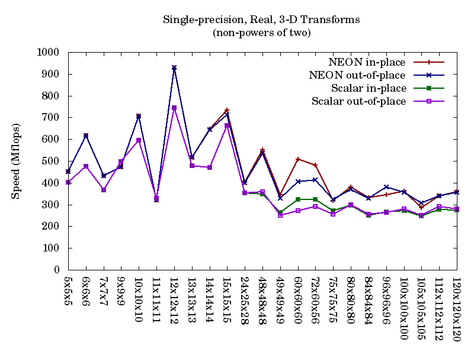
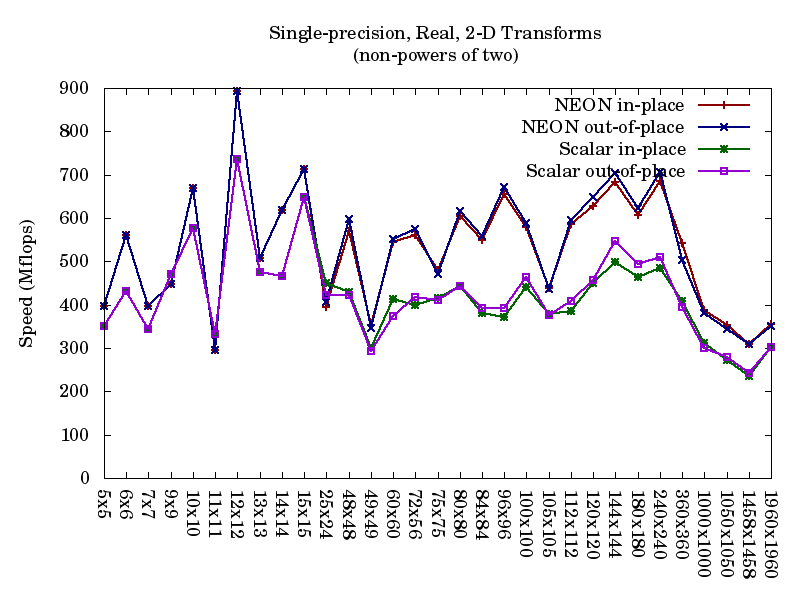
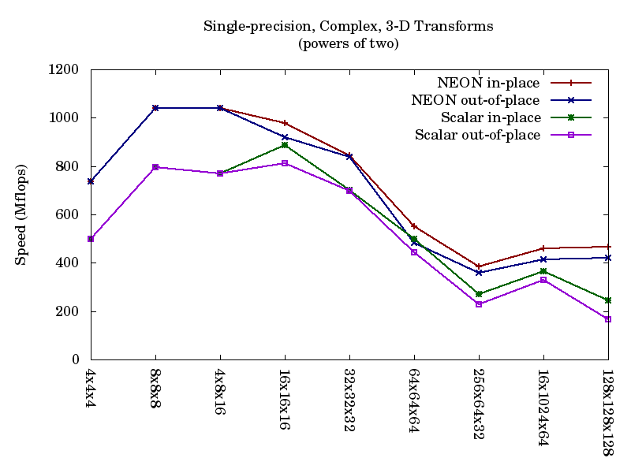
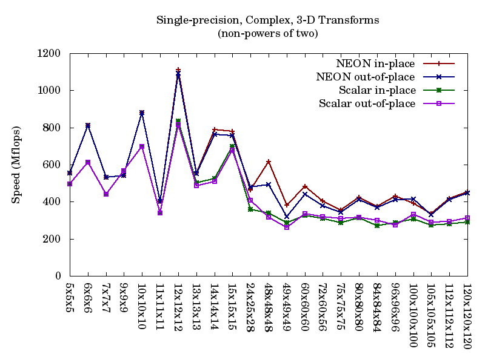
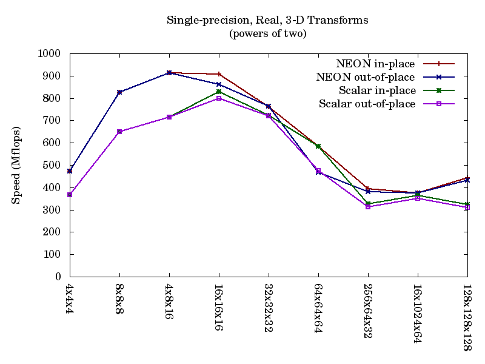
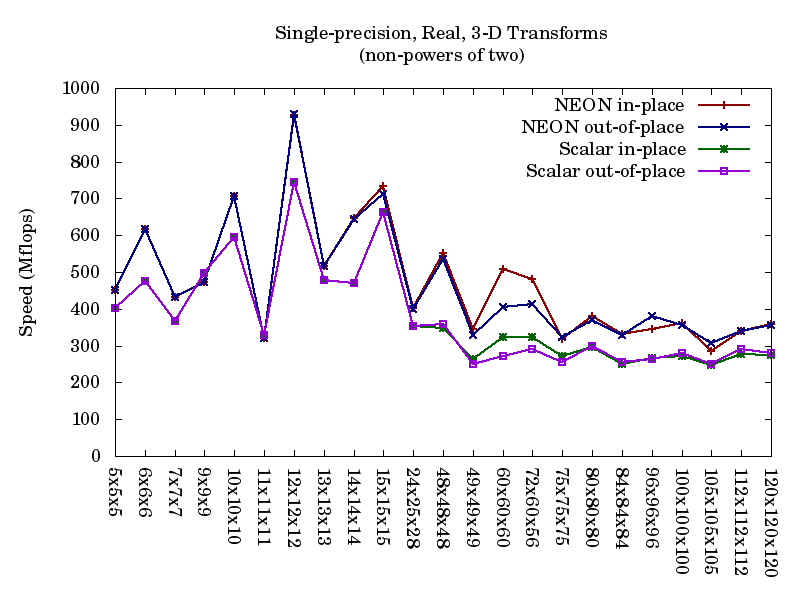
System: 1 GHz ARM Cortex A9 (Pandaboard)
Compiler: gcc 4.4.5 (native)
Configure settings: --enable-single --enable-neon --enable-fma --enable-armv7a-cycle-counter ARM_CPU_TYPE=cortex-a9
Comments: Using NEON's fused multiply-add instructions, peak speeds of about 1 GF are reached. Average performance is 5-10% slower than using separate vector multiply and add instructions.
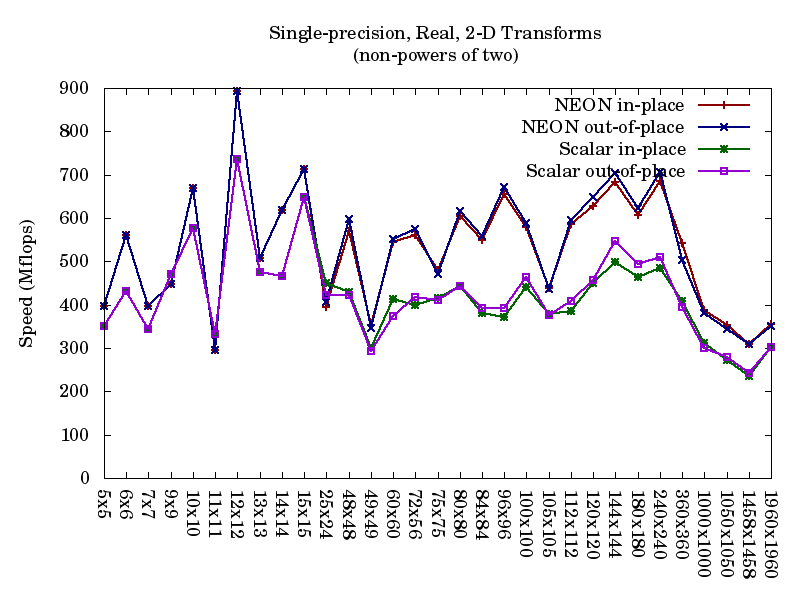
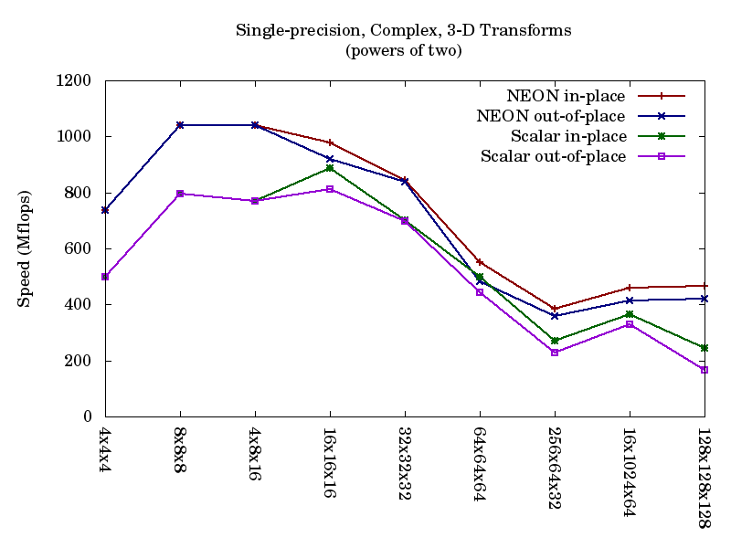
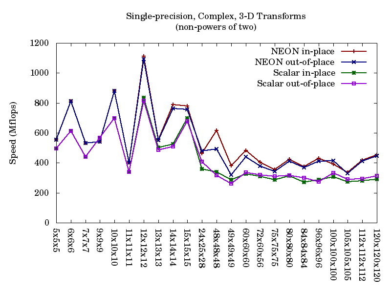
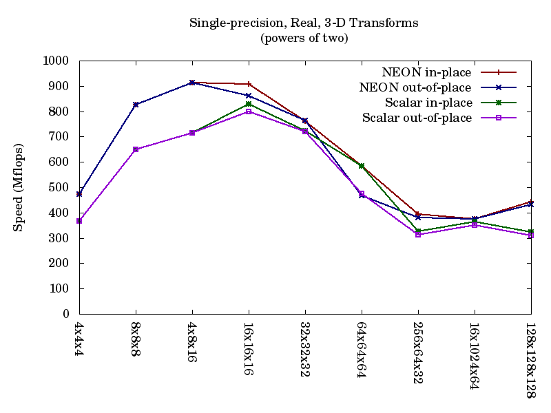
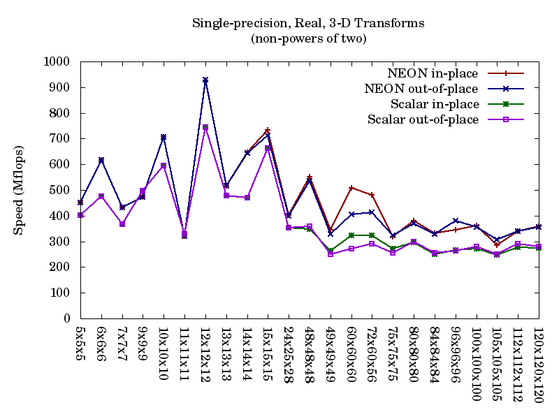
Detailed NEON timing data for these cases
Copyright © 2010-11 Vesperix Corporation